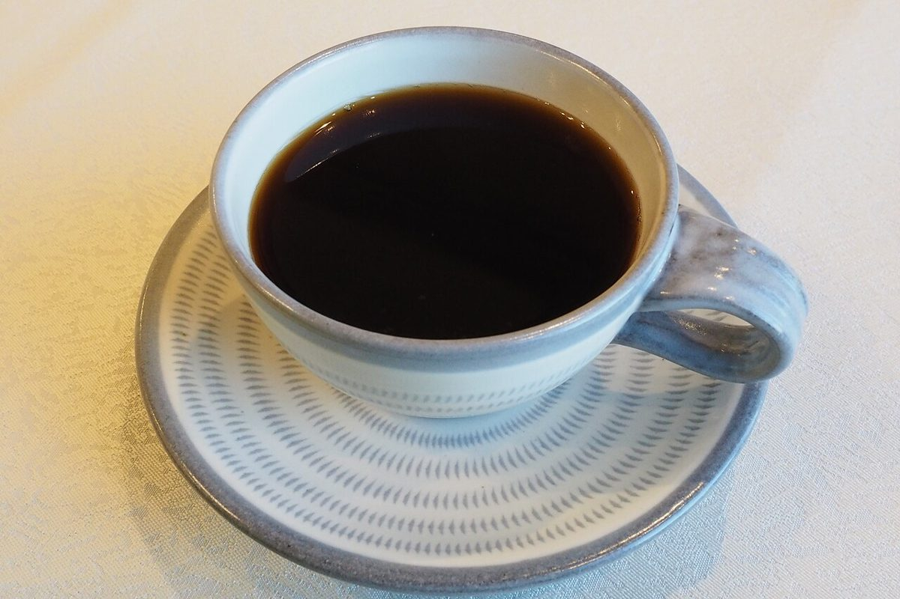

0.1 / 店のこと
店のこと
お店について確認できているのは、所在地・電話番号・Instagramのアカウントです。
このページの「連想」の部分は、制作側が考えて書いたものです。お店の実際の様子・考え・メニューとは関係がありません。
確認できていること
- 店名は「cafe c-lover」、業種はカフェ
- 所在地は北海道函館市宝来町３−７(〒040-0043)
- 電話番号は080-9174-5598(Googleマップ記載)
- Instagramは @cafeclover.hakodate
- 営業時間・定休日・メニュー・価格・ご予約・駐車場は準備中

0.5連想
Cの輪を行ごとに小さく
視力表は、上の行ほど大きく、下の行ほど小さくなります。このサイトでは、その並びをそのままデザインに使いました。写真にも、同じ輪の形を使っています。お店の考えとは関係のない、制作側の連想です。

開いている向きを、ひとつずつ。